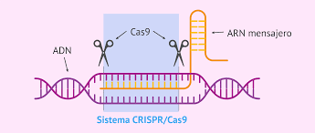
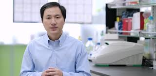
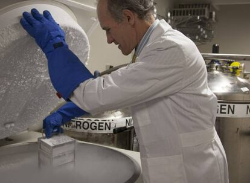
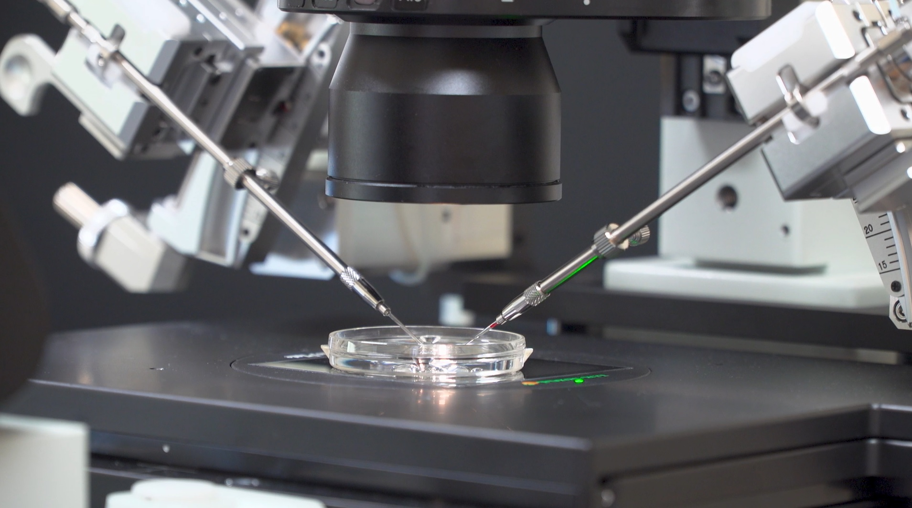

What is CRISPR
CRISPR (Clustered Regularly Interspaced Short Palindromic Repeats) is a revolutionary tool
that allows scientists to make precise changes to DNA. Originally discovered as part of a bacterial defense system,
CRISPR has become a powerful method for gene editing, enabling targeted modifications in plants,
animals, and even humans.

The Controversial Experiment
In late 2018, Chinese scientist He Jiankui shocked the global scientific community by announcing the birth of the world’s
first genetically modified babies. Using a gene-editing technique known as CRISPR-Cas9,
Jiankui claimed to have altered the DNA of twin girls to make them resistant to HIV.

The announcement sparked intense ethical, scientific, and legal debates that still echo today.
Jiankui’s experiment aimed to disable a gene called CCR5, which allows HIV to enter human cells.
By editing this gene in embryos, he attempted to create HIV-resistant humans. The embryos were then implanted,
and the resulting birth of the twins, Lulu and Nana, marked the first known case of germline genetic
modification in humans.
This type of editing is particularly controversial because it affects every cell in the body,
including future generations.
Global Reaction
The event triggered widespread debate about the regulation of genetic technologies.
Countries like the U.S., U.K., and members of the EU have banned or strictly regulated human germline editing.
Meanwhile, international organizations have called for a global moratorium on the clinical use of CRISPR
for heritable human editing.
What’s Next?
Today, scientists continue to explore CRISPR’s potential in medicine, especially for diseases like sickle cell anemia,
cancer, and rare genetic disorders. However, most researchers agree that editing embryos for non-therapeutic
purposes—like enhancing intelligence or physical traits—remains ethically unacceptable.

Final Thoughts
CRISPR is one of the most transformative scientific tools of our time. But with great power comes great responsibility.
The case of the genetically modified babies stands as a powerful reminder that science must advance
hand in hand with ethics, law, and public dialogue.
